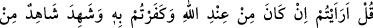
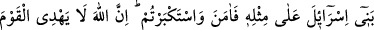
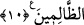

Teâlâ dilediğini hidâyet eder. Gayblerin bilgisi ise bizzat Allah Teâlâ hazretlerine
mahsustur. Peygamberlerin ve velî kulların gaybdan haber vermeleri vahiy vasıtasıyla,
Allah’ın ilhâm ve tâlimiyledir. İşte Peygamberimiz (s.a.)’ in kıyâmet alâmetlerini haber
vermesi bu kabildendir.
Yine âhir zamanda ortaya çıkacak olan bir takım bid’atların, insanların nefs ve
hevâlarına uymaları gibi durumların haber verilmesi hep bu kabildendir. Yine
Peygamberimiz (s.a.)’in bazı insanların özel hallerini haber vermesi de bu kabildendir.
İşte Peygamberimiz (s.a.), “şu kapıdan içeri giren kişi cennetliktir” buyurmuş[24], içeriye
Abdullah b. Selâm girmiş, ashâb-ı kirâm adamın başına toplanıp durumu kendisine
haber vermişler ve Abdullah b. Selâm’a: “Allah katında en çok ümidli olduğun amelini
bize söylesen de bizde yapsak” demişler, Abdullah “ben ameli zayıf biriyim, Allah
katında en ümidli olduğum şey ise kalp temizliği ve mâlâyânî olarak bilinen boş ve
faydasız söz ve davranışlardan uzak durmaktır” demiştir.
Tarikat ve tasavvuf tâifesinin seyyidlerinden Cüneyd Bağdâdî şöyle demiştir: Bana
dayım Serî Sakatî “insanlara konuş, onlara öğüt, nasihat ver” dedi. Ben bu konuda
kendimi liyakatsiz buluyor ve bunu yapamıyordum. Nihâyet rüyamda, mânâ aleminde bir
Cuma gecesinde Peygamberimiz (s.a.)’ i gördüm. Bana “insanlara konuş” buyurdu. Ben
uyanıp dayımın evine gittim. Bana “Peygamber tarafından sana söyleninceye kadar bizi
onaylamadın değil mi” dedi. Artık ertesi günden itibaren kürsiye oturdum ve insanlara
vaaz ve nasihat etmeye başladım. Hristiyan bir genç tebdil-i kıyafetle gelip yanıma
oturdu ve bana: “Hocaefendi! Peygamber (s.a.)’in “müminin firasetinden sakının, zira
o Allah’ın nuruyla bakar”[25] sözünün mânâsı nedir ?” diye sordu.
Cüneyd derki; “ben başımı öne eğdim. Sonra başımı kaldırıp kendisine artık
müslüman ol, zira senin müslüman olma vaktin iyice yaklaştı” dedim. Hristiyan genç
müslüman oldu. İşte bu durum Allah’ın İmâm Şiblî ve Cüneyd-i Bağdâdî hazretlerine
bildirmesiyle olmuştur.
10. De ki: Hiç düşündünüz mü; şâyet bu, Allah katından ise ve siz onu inkâr
etmişseniz, İsrailoğullarından bir şâhid de bunun benzerini görüp inandığı halde siz
yine de büyüklük taslamışsanız (haksızlık etmiş olmaz mısınız)? Şüphesiz Allah,
zalimler topluluğunu doğru yola iletmez.
“De ki:” Söyleyin bakalım ey millet “Hiç düşündünüz mü: Eğer” bana vahyedilen
“bu (Kur’ân)” gerçekte “Allah katından olduğu halde siz onu tanımamışsanız;” inkâr